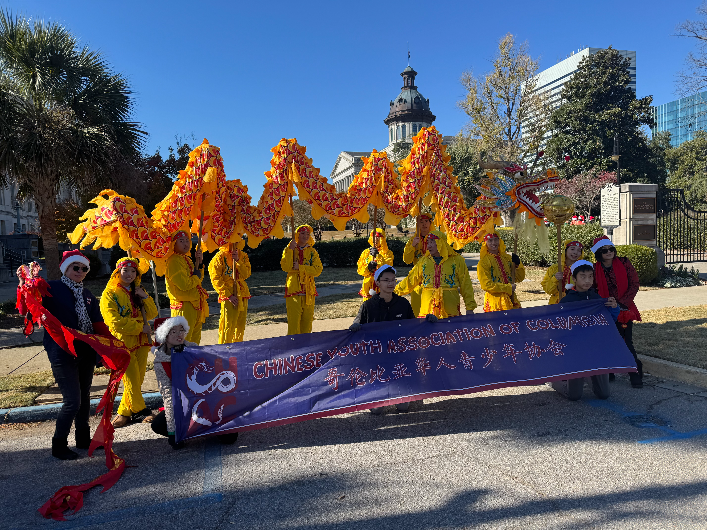

CHINESE YOUTH ASSOCIATION OF COLUMBIA
The Chinese Youth Association of Columbia, a vibrant South Carolina-based youth group, is dedicated to promoting Chinese culture through impactful service initiatives. Our organization is committed to fostering cultural awareness, community engagement, and youth empowerment. By organizing a variety of events, workshops, and community projects, we strive to create a welcoming space for all individuals interested in exploring and celebrating Chinese heritage and traditions.
At the core of our mission is the belief that cultural exchange and service to the community are powerful tools for personal growth and mutual understanding. Through our dynamic programs and activities, we aim to bridge cultural gaps, build friendships, and instill a sense of pride in Chinese identity among youth in Columbia and beyond.

CYAC supports the Presidential Volunteer Service Award (PVSA), a prestigious award program in the United States that honors students and groups committed to volunteering and impacting the community. Being honored by the PVSA is a powerful way to show your determination to do community service.
CHINESE YOUTH ASSOCIATION OF COLUMBIA
cyac724@gmail.com
Columbia, SC, USA

Donate
Checks: 208 Longfield Lane, Elgin SC, 29045 Payable to CYAC
Venmo: iamultimateusa@gmail.com
Zelle:

501(c)(3) Non-Profit Organization | All donations are tax-deductible | EIN Number 33-2244521.